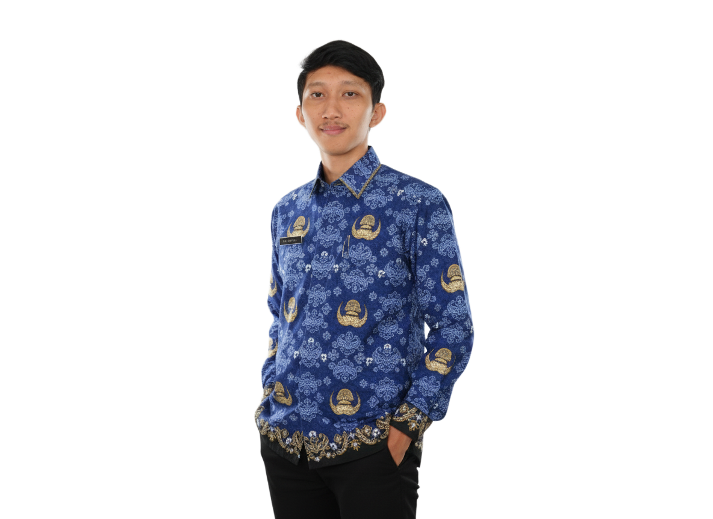

Halo, Saya Dikki Fadhillah
Lulusan **Teknik Informatika (S.Kom, Cumlaude GPA 3.53)** berpengalaman lebih dari 9 tahun di industri **Telekomunikasi & Network Infrastructure**. Ahli dalam pengelolaan *FTTx, Fiber Optic O&M, Project Management, Data Analysis, hingga Pengembangan Automation Tools*.

DIKKI FADHILLAH
City Leader & O&M Specialist
Profil & Kompetensi
Keahlian Teknikal & Manajemen Operasional
Kombinasi latar belakang pendidikan Teknik Informatika dengan rekam jejak kepemimpinan lapangan di perusahaan penyedia infrastruktur telekomunikasi terkemuka Indonesia.
FTTx & OSP Telecom
Pengelolaan siklus hidup jaringan optik dari perencanaan design, provisioning, hingga preventive/corrective maintenance.
- O&M FTTx & OSP Infrastructure
- Data Management Core FO & ManCore
- ATP Test Procedure & Quality Control
- GPON & XGSPON Technology
Data Analytics & Visualization
Transformasi data operasional lapangan menjadi insight strategis dan pemantauan KPI secara langsung.
- Google Looker Studio & Tableau
- Microsoft Power BI & Excel Pivot
- AppSheet & Automated Reporting
- Technical Performance KPI Tracking
Hardware Tools & NMS
Penguasaan mendalam peralatan pengujian serat optik & perangkat lunak pengawasan jaringan.
- OTDR, Fusion Splicer, OPM, OLS, VFL
- Huawei U2000 & iMaster NCE
- ZTE Netnumen, Fiberhome UNM2000
- PRTG, Cacti, ACS iBooster
Automation & Web Dev
Pengembangan sistem otomatisasi pelaporan berbasis Bot Telegram dan sistem manajemen berbasis web.
- Telegram Bot API Integration
- Web Programming & Database
- Core Data Mgmt App Development
- Google Earth, QGIS & AutoCAD
Leadership & Management
Memimpin teknisi internal & vendor, supervisi operasional regional, serta penanganan perizinan.
- City Leadership & Vendor Supervision
- Permit & Site Acquisition Negotiation
- Resource & Maintenance Scheduling
- OHS / K3 Implementation
Design & Creative Media
Keahlian pendukung dalam dokumentasi visual, presentasi teknis, dan perancangan materi instruksional.
- Adobe Photoshop & Lightroom
- Corel Draw
- DaVinci Resolve & CapCut
- Technical Presentation Design
Karir & Pengalaman kerja
Rekam Jejak Profesional
Pengalaman kepemimpinan operasional, inspeksi infrastruktur, serta penanganan teknis dari tahun 2015 hingga saat ini.
City Leader
PT Mega Akses Persada (Fiberstar)
- Supervisi teknisi internal & kelola operasional divisi untuk mencapai target KPI (broadband provisioning/LMS, troubleshoot & maintenance infrastruktur).
- Membuat jadwal kerja teknisi & jadwal preventive maintenance site/PoP (Civil Mechanical Electrical) & OSP FO.
- Analisis area yang sering mengalami gangguan untuk program penyusunan preventive maintenance.
- Analisis penjualan produk broadband/LMS setiap bulan & supervisi vendor sesuai SOP.
- Inspeksi Quality Control (QC) pekerjaan lapangan terkait kualitas teknis instalasi & rekapitulasi inventaris material.
FTTH / FO Inspector
PT Tower Bersama Infrastructure Group (TBIG)
- Supervisi vendor dan mengawal proyek dari penerbitan SPK hingga tahapan ATP (Acceptance Test Procedure).
- Supervisi proyek fiberisasi tower Telkomsel, IOH, XL, Smartfren serta FTTH XL Home & IOH Indosat Hifi.
- Negosiasi perizinan & site acquisition jaringan fiber optik.
Achievement & Innovation:
• Successful delivery IOH Fiberization Q3 New Site (50.000km ultimate ring) & FTTH XL project 4.000 HP/bulan.
• Membuat Field Supervisor Tracking Dashboard terintegrasi Project Manager worksheet.
• Mengembangkan Sistem Aplikasi Data Management Core untuk FTTH XL Home Jambi.
Team Leader Sector IOAN
PT Telkom Akses
Memimpin operasional Integrated Operation Access Network (IOAN), mapping teknisi, serta evaluasi KPI Customer Experience.
Achievement & Innovation:
• Menaikkan realisasi KPI Sektor Klari dari **<60% menjadi 90%**.
• Mengembangkan **Telegram Reporting Bot** teknisi IOAN untuk rekap penutupan trouble ticket & material.
• Membuat Dashboard Infrastruktur ODC Klari & Dashboard Kinerja Teknisi.
Team Leader Preventive Maintenance
PT Telkom Akses
Pencegahan gangguan massal, koordinasi instansi PUPR & kompetitor, penanganan izin re-route jaringan, serta pengelolaan data ManCore FTM/NE/Valdat (OLT, FTM, ODC, ODP).
Inovasi: Joint Database Core FTM Witel Karawang & Bot Telegram FTM Integrasi Sheet.Technician Roles (BGES, Maintenance, Provisioning)
PT Telkom Akses
- • BGES Service Tech (2019-2022): Troubleshooting jaringan pelanggan korporat & BTS Telkomsel sesuai SLA. Alat: Trend Aurora ISDN, Splicer, OTDR, OPM, OLS.
- • Maintenance & QE Tech (2017-2019): Penanganan gangguan massal & check-up perangkat aktif (OLT, MSAN, MDU).
- • Provisioning & Migration Tech (2015-2017): Pemasangan jaringan & migrasi jaringan tembaga ke Fiber Optic.
Inovasi & Digitalisasi Operasional
Sistem & Aplikasi Yang Diciptakan
Pengembangan aplikasi khusus untuk efisiensi pelaporan teknisi, visualisasi GIS/ODC, dan otomatisasi pengelolaan core fiber optik.
Telegram Reporting Bot untuk Teknisi Field
Bot Telegram otomatisasi pelaporan penutupan *trouble ticket* dan pemakaian material teknisi IOAN & FTM secara real-time yang terintegrasi langsung dengan database Google Sheets / ManCore data sheet.
Aplikasi Core Data Management FTTH & FTM
Aplikasi manajemen data inti alokasi core fiber optik untuk proyek FTTH XL Home Jambi dan seluruh wilayah Witel Karawang. Memudahkan mapping tube, core, ODF, dan ODC.
Field Supervisor & Project Manager Integrated Dashboard
Dashboard pelacakan progres pekerjaan lapangan yang terhubung langsung dengan worksheet Project Manager TBIG untuk monitoring status perizinan, pemasangan kabel, hingga ATP.
Dashboard Pemetaan Infrastruktur ODC & Teknisi Performance
Pemetaan visual lokasi Optical Distribution Cabinet (ODC) Sektor Klari berbasis GIS beserta matrik evaluasi produktivitas harian individual teknisi.
Kalkulator Fiber Optic Link Budget
Simulasi perhitungan redaman total (Link Loss Budget) pada jaringan FTTH/GPON secara otomatis sesuai parameter O&M telekomunikasi.
Parameter Jaringan FO
Latar Belakang Akademis
Pendidikan Resmi
STT Wastukancana Purwakarta
Sarjana Komputer (S.Kom) - Teknik Informatika
2017 - 2021 | IPK 3.53 dari 4.00
SMK Negeri 1 Sukabumi
Teknik Elektronika Industri
2013 - 2015
Bahasa (Languages)
Hobi & Minat
Lisensi & Sertifikasi Industri
Sertifikat Profesional
Basics of Disciplined Agile
Project Management Institute (PMI) • 2024
Introduction To GPON-XGSPON
Telkom Corporate University • 2024
Strategic Process Mgmt Excellent
TBIG Learning & Training • 2024
Fiber Optic Certification
TBIG Learning & Training • 2023
CCNAv7: Introduction to Networks
Cisco Digitalent Kominfo • 2020
Cyber Security Certification
Fiber Academy Telkom Akses • 2020
Fiber Optic Operation & Maintenance
Telkom Corporate University • 2020
Basic of OHS (K3)
Telkom Corporate University • 2018
Mari Berkolaborasi
Hubungi Dikki Fadhillah
Siap berkontribusi untuk posisi **City Leader, O&M Manager, Network Engineer, Data Analyst**, maupun proyek infrastruktur telekomunikasi Anda.